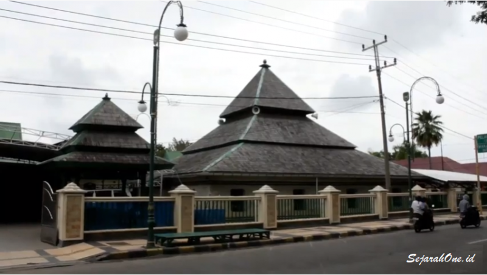

Sejarah
Kota Palopo, dahulu disebut Kota Administratip (Kotip ) Palopo, merupakan Ibu Kota Kabupaten Luwu yang dibentuk berdasarkan Peraturan Pemerintah ( PP ) Nomor Tahun 42 Tahun 1986. Seiring dengan perkembangan zaman, tatkala gaung reformasi bergulir dan melahirkan UU No. 22 Tahun 1999 dan PP 129 Tahun 2000, telah membuka peluang bagi Kota Administratif di Seluruh Indonesia yang telah memenuhi sejumlah persyaratan untuk dapat ditingkatkan statusnya menjadi sebuah daerah otonom.
Ide peningkatan status Kotip Palopo menjadi daerah otonom , bergulir melalui aspirasi masyarakat yang menginginkan peningkatan status kala itu, yang ditandai dengan lahirnya beberapa dukungan peningkatan status Kotip Palopo menjadi Daerah Otonom Kota Palopo dari beberapa unsur kelembagaan penguat seperti :
- Surat Bupati Luwu No. 135/09/TAPEM Tanggal 9 Januari 2001, Tentang Usul Peningkatan Status Kotip Palopo menjadi Kota Palopo.
- Keputusan DPRD Kabupaten Luwu No. 55 Tahun 2000 Tanggal 7 September 2000, tentang Persetujuan Pemekaran/Peningkatan Status Kotip Palopo menjadi Kota Otonomi,
- Surat Gubernur Propinsi Sulawesi Selatan No. 135/922/OTODA tanggal 30 Maret 2001 Tentang Usul Pembentukan Kotip Palopo menjadi Kota Palopo;4). Keputusan DPRD Propinsi Sulawesi Selatan No. 41/III/2001 tanggal 29 Maret 2001 Tentang Persetujuan Pembentukan Kotip Palopo menjadi Kota Palopo;
Hasil Seminar Kota Administratip Palopo Menjadi Kota Palopo; Surat dan dukungan Organisasi Masyarakat, Oraganisasi Politik, Organisasi Pemuda, Organisasi Wanita dan Organisasi Profesi; Pula di barengi oleh Aksi Bersama LSM Kabupaten Luwu memperjuangkan Kotip Palopo menjadi Kota Palopo, kemudian dilanjutkan oleh Forum Peduli Kota.
Akhirnya, setelah Pemerintah Pusat melalui Depdagri meninjau kelengkapan administrasi serta melihat sisi potensi, kondisi wilayah dan letak geografis Kotip Palopo yang berada pada Jalur Trans Sulawesi dan sebagai pusat pelayanan jasa perdagangan terhadap beberapa kabupaten yang meliputi Kabupaten Luwu, Luwu Utara, Tana Toraja dan Kabupaten Wajo serta didukung dengan sarana dan prasarana yang memadai, Kotip Palopo kemudian ditingkatkan statusnya menjadi Daerah Otonom Kota Palopo
Tanggal 2 Juli 2002, merupakan salah satu tonggak sejarah perjuangan pembangunan Kota Palopo, dengan di tanda tanganinya prasasti pengakuan atas daerah otonom Kota Palopo oleh Bapak Menteri Dalam Negeri Republik Indonesia , berdasarkan Undang-Undang No. 11 Tahun 2002 tentang Pembentukan Daerah Otonom Kota Palopo dan Kabupaten Mamasa Provinsii Sulawesi Selatan , yang akhirnya menjadi sebuah Daerah Otonom, dengan bentuk dan model pemerintahan serta letak wilayah geografis tersendiri, berpisah dari induknya yakni Kabupaten Luwu.
Diawal terbentuknya sebagai daerah otonom, Kota Palopo hanya memiliki 4 Wilayah Kecamatan yang meliputi 19 Kelurahan dan 9 Desa. Namun seiring dengan perkembangan dinamika Kota Palopo dalam segala bidang sehingga untuk mendekatkan pelayanan pelayanan pemerintahan kepada masyarakat , maka pada tahun 2006 wilayah kecamatan di Kota Palopo kemudian dimekarkan menjadi 9 Kecamatan dan 48 Kelurahan.